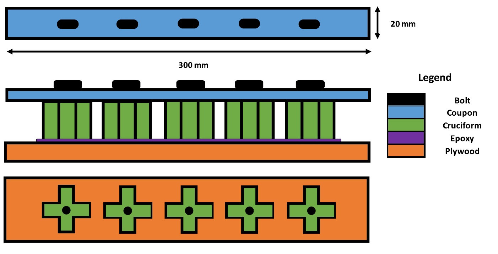
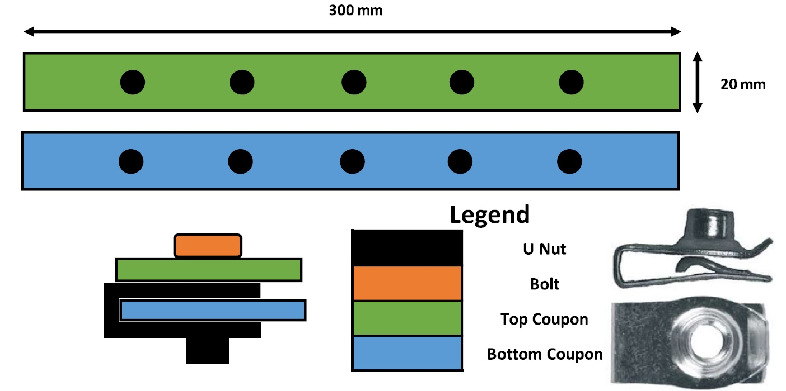
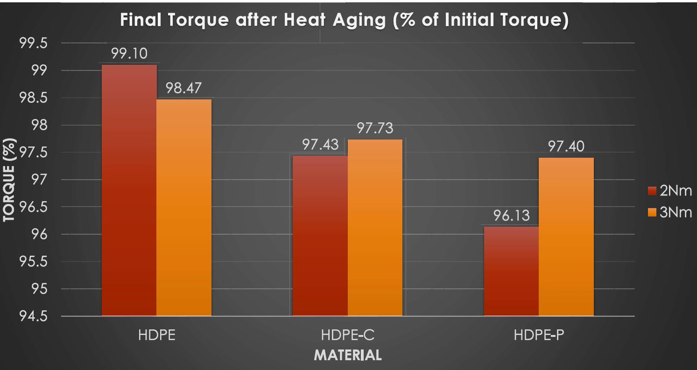

Evaluating plastic creep in HDPE and the effect on fasteners
Project Aim: Determining if change of material will adversely affect bolted assemblies in the design
Background:

Compressive creep is the tendency of solid objects to deform over time, due to the application of a constant
compressive load. Material relaxation of bolted assemblies over time results in looser connections.
Different materials were being evaluated as part of a study. They included regular HDPE, HDPE injected with
Nitrogen Gas, and HDPE with chemical gassing agents. The purpose of material change was to produce parts with
inherent insulation capabilities.
Experiment
Two different experimental setup were used. The first involved a coupon of plastic bolted to plastic “cruciform”. The second involved two plastic coupons bolted together with the use of a “U-Clip”. Below are the experimental setups used:
Experiment 1
Experiment 2
Parts were assembled together to a predetermined torque value. The parts were then put in an oven to simulate plastic creep over time. After the session in the oven the parts were dissembled. The initial torque value required to tighten was then measured
Results
Resultant torque after experiment
Due to the material change minimal torque loosening was encountered. Torque after experiment was well within project specifications.